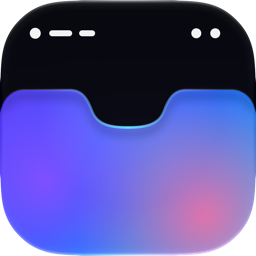

Privacy Policy
Notchless is built to keep your Mac's data on your Mac. There is no account, no advertising and no tracking.
What stays on your Mac
- Wallpapers. Notchless reads your current wallpaper and saves the painted copy inside its own app container. Pictures are never uploaded.
- Calendar. Only if you turn on "Next calendar event", Notchless reads your upcoming events through macOS to show the next one in the Notch Island. Events are never sent anywhere.
- Files on the Shelf. Files you drop on the notch are referenced locally so they can be dragged out or sent with AirDrop. They are never uploaded.
- Settings. Stored locally in macOS preferences.
Purchases
Purchases are made through Apple's App Store. Notchless uses RevenueCat to check which plan you own. RevenueCat receives an anonymous app user ID, your App Store purchase records and a few non-personal device attributes (macOS version, number of displays, whether the Mac has a notch, app version and preferred language). This data is used only to provide and improve purchases, is not linked to your identity by us, and is never sold or used for advertising.
Children
Notchless does not knowingly collect personal information from anyone, including children.
Changes and contact
If this policy changes, the new version will be posted here. Questions: hamdijomaa.x@gmail.com.
© 2026 Hamdi Jomaa. Last updated 28 October 2026.